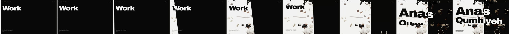
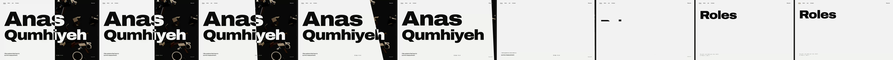
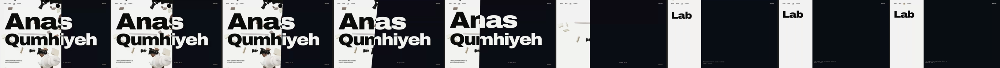
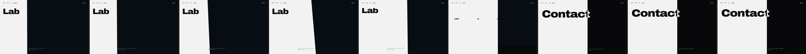
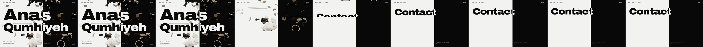
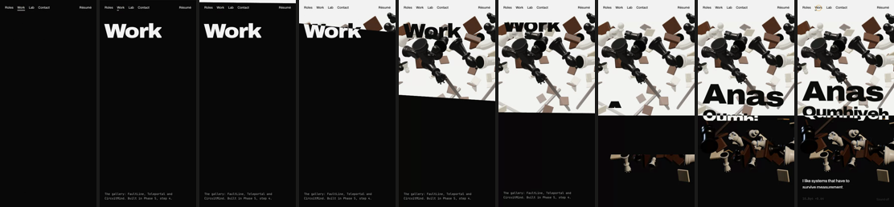
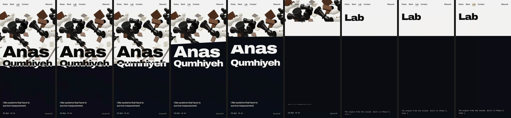
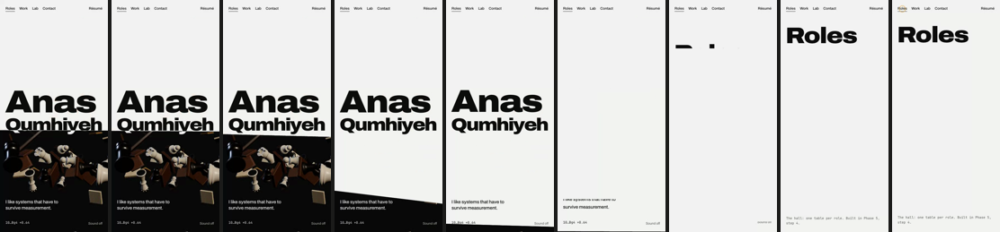

Phase 5, step 3. Every page change is the seam sweeping (src/lib/seam/, src/components/shell/). The rooms it sweeps into are stubs at their resting seams, with a title and a note, until step 4 builds them. What is judged here is the sweep, the chrome, Back and Forward, and the fallbacks. Recordings are real time, from the production build.
The prototype's gallery (lights coming up, the camera settling) belongs to the Work room, built in step 4. Here the dark side is the stub's black. The seam, its lean, the type leaving and "Work" rising are what should match.








To try it: npm run build && npx next start -p 3100, open localhost:3100. The opening plays once per session.
| What | Storyboard | Build |
|---|---|---|
| the rooms | lights up in the gallery, the camera settles along the hall, the search tree grows, the clock slides up | stubs: the resting seam, the title and a note. Each room's own arrival comes with it in step 4. |
| other pairs | storyboarded: hero to Work, Roles, Lab and Contact | every other pair uses the same rule: the hero-to-Work numbers (1.15 s, 13° at a 0.44 travel) scaled by distance, 0.8 to 1.15 s. Lab to Contact comes out at 7.5°, against the storyboard's 7°. |
| Contact's lean | +7°, straightening with the arrival ease (contact.html) | the general lean, 13·sin(πp) scaled. The contact prototype's own profile can come with the room in step 4. |
| what is left | not specified | when the seam lands short of an edge (Lab at 30.5%), what the old page still covers rises out of its own region, as a line leaves its mask (hero to Lab, the floating pieces on the left). Question 2. |
| no travel | "the seam travels to 55.9%" | from the hero (also 55.9%) there is nothing to travel: the old lines leave, then the old page rises away. Question 1. |
| a slow page | not specified | the sweep waits until the arriving page has painted twice. Arriving at the hero, which builds its 3D stage, holds the frozen snapshot about 0.3 s before the seam moves (visible in the Back recordings). Question 3. |
| the underline | moves at once (150 ms) | the old underline shrinks as the new one grows, 150 ms, rather than one bar sliding. |
| Back and Forward | the same sweep, reversed | as specified. The router restores history without a transition, so the event is held and replayed as an ordinary navigation; scroll positions are kept per page. |
| résumé link | never animated, covered or moved | as specified. It was a blend-mode inversion; it is now drawn like the nav (ink, and paper clipped to the dark side), because blending does not survive a view transition. Over 3D imagery it is paper white rather than an inversion. |
| sound | a felt swish under the sweep | step 5, with the toggle. |
| smooth scrolling | Lenis at lerp .1 | step 4, when a page first scrolls: it cannot be tested on single-screen stubs. |
| hero unchanged | the hero, moved onto the shared seam and chrome, is pixel-identical to its approved Gate 5 frames (0.00% at four instants, both sizes). |
| production | seven view transitions per size (four nav items, Back, Back, Forward), every seam landing on its resting value; no errors, no CSP violations, no WebGL warnings. |
| fallbacks | reduced motion is a cut; without View Transitions (older Firefox) the live seam still travels; a second click mid-sweep lands cleanly on the last target; résumé mode has no chrome and no canvas, and Back returns from it. |
| keyboard | Tab reaches the skip link, then the nav, then the page; Enter on a nav item sweeps. |
| accessibility | axe is clean on every room. The ink copy of type resting on the dark side takes its paper twin's colour, so what is read is what is seen; one heading, one navigation, one banner. |
| text clashes | none on any page at rest, at 1440×900, 1024×768, 390×844 and 360×640. |
| cursor | the amber dot on the pointer, the capture ring over links, off on touch and under reduced motion. |
| tests | e2e/navigation.spec.ts (8 tests) and src/lib/seam/seam.test.ts (8). All 17 e2e and 62 unit tests pass. |